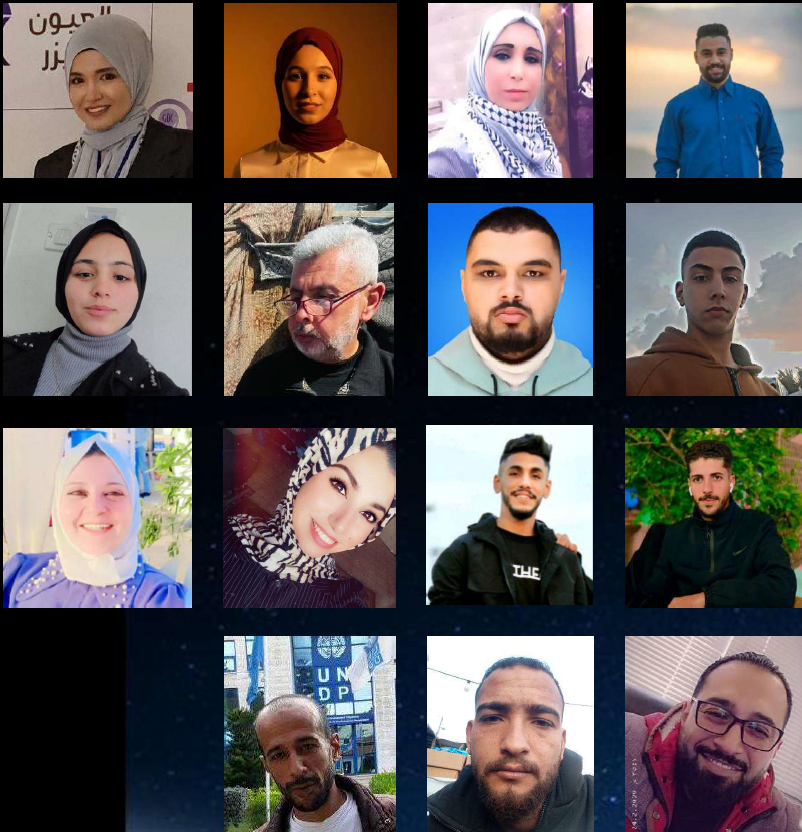
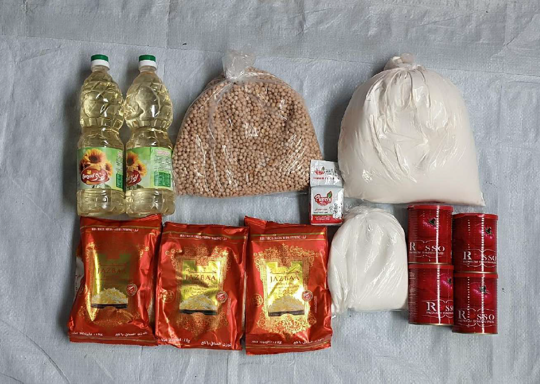
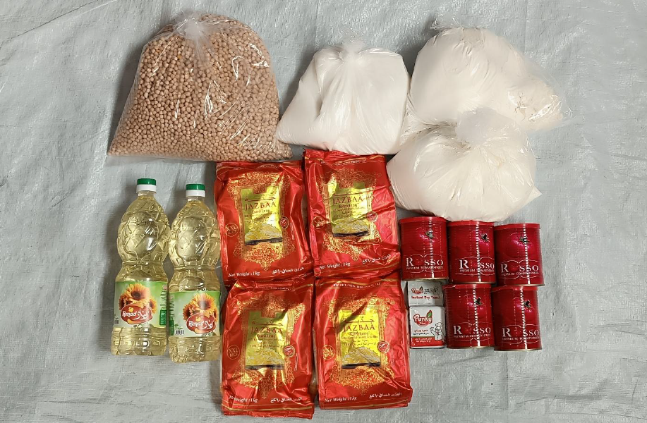
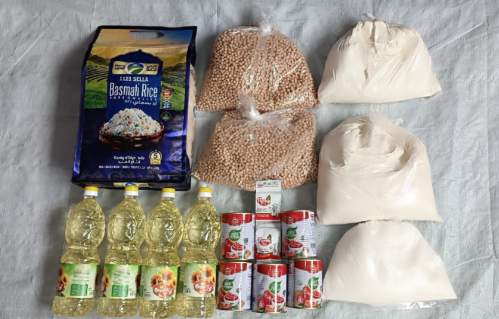

رقم التوزيع 137 | 16 مارس 2026
مؤسسة تسجي الخيرية: عطاء يصل إلى قلب غزة
في مارس 2026، نفذت مؤسسة تسجي الخيرية بالتعاون مع شركائها ومتطوعيها المحليين مشروع توزيع مساعدات غذائية استهدف 400 أسرة في قطاع غزة، ليستفيد منه 1,868 فردًا في مدينة غزة، النصيرات، ودير البلح.
الأثر بالأرقام
نتائج قابلة للقياس في لحظة إنسانية قاسية
الأرقام هنا ليست للعرض فقط، بل لتوثيق وصول الغذاء إلى أسر حقيقية عبر عمل ميداني منظم.
نظرة عامة
المشروع كاستجابة منظمة، لا كتوزيع عابر
هذا المشروع ليس مجرد توزيع طرود غذائية، بل نموذج إنساني منظم يقوم على الزيارات المنزلية، تقييم الاحتياج، تصنيف الأسر حسب عدد الأفراد، ثم توزيع المساعدات بشكل عادل وموثق.
تبدأ الحكاية من معاناة يومية تحت ضغط النزوح وندرة الغذاء، ثم تتحول إلى آلية تحقق ميداني وتعاون بين الشركاء والمتطوعين المحليين لضمان وصول الدعم إلى الأسر الأكثر احتياجًا بكرامة ووضوح.
الشركاء
شبكة تعاون حول هدف واحد

مؤسسة تسجي / تزو تشي
الداعم والمنسق الرئيسي للمبادرة الإنسانية ومتابعة جودة التنفيذ.

المسجد الكبير في تايبيه
شريك داعم في حشد الموارد وربط الجهود الإنسانية بالمجتمع.

مدرسة المناهل في تركيا
مساندة مجتمعية للمشروع ضمن شبكة تضامن عابرة للحدود.

المتطوعون المحليون في غزة
الذراع الميدانية للتحقق، التجهيز، النقل، والتوزيع المباشر.
النطاق الجغرافي
أين وصلنا؟
توزعت المساعدات على ثلاث مناطق في قطاع غزة وفق بيانات الأسر وحجم الاحتياج الموثق ميدانيًا.
Gaza Strip
خريطة التوزيع

عدالة التوزيع
نموذج توزيع عادل حسب حجم الأسرة
تم تصنيف الأسر المستفيدة إلى ثلاث فئات بناءً على عدد أفراد الأسرة لضمان توزيع أكثر عدالة وملاءمة للاحتياج.
68.25%
الأسر الصغيرة
273 أسرة
24%
الأسر المتوسطة
96 أسرة
7.75%
الأسر الكبيرة
31 أسرة
الغذاء
مكونات الطرود الغذائية

الأسر الصغيرة
أقل من خمسة أفراد
- أرز
- دقيق
- زيت
- سكر
- صلصة طماطم
- خميرة
- حمص

الأسر المتوسطة
من ستة إلى سبعة أفراد
- أرز
- دقيق
- زيت
- سكر
- صلصة طماطم
- خميرة
- حمص

الأسر الكبيرة
ثمانية أفراد فأكثر
- أرز
- دقيق
- زيت
- سكر
- صلصة طماطم
- خميرة
- حمص
آلية العمل
من التبرع إلى التوثيق الميداني
- 1
جمع التبرعات
- 2
التواصل مع الفريق المحلي
- 3
مقارنة أسعار الموردين
- 4
اختيار المورد الأنسب
- 5
تشكيل فرق المتطوعين
- 6
تدريب المتطوعين عن بعد
- 7
تنفيذ الزيارات المنزلية
- 8
تدقيق البيانات واعتمادها
- 9
تجهيز الطرود الغذائية
- 10
النقل والتوزيع الميداني
- 11
التوثيق والمتابعة
المتطوعون
أبطال من الميدان
تكوّن الفريق من 15 متطوعًا محليًا، تم توزيعهم على فرق ميدانية في مدينة غزة، النصيرات، ودير البلح، إضافة إلى فريق لوجستي مسؤول عن النقل والتجهيز.
صور المتطوعين توثق جانبًا من الفريق المحلي الذي ساهم في تنفيذ الزيارات الميدانية والتوزيع.


فريق ميداني
فريق مدينة غزة
5 متطوعين
ساهم الفريق في الزيارات المنزلية، التحقق من البيانات، وتوزيع المساعدات داخل مدينة غزة.


فريق ميداني
فريق النصيرات
3 متطوعين
عمل الفريق على الوصول للأسر المستفيدة في النصيرات وتوثيق الاحتياج ميدانيًا.


فريق ميداني
فريق دير البلح
5 متطوعين
تابع الفريق أكبر عدد من الأسر المستفيدة ضمن هذا التوزيع في منطقة دير البلح.

فريق لوجستي
الفريق اللوجستي
2 متطوعين
تولى الفريق دعم عمليات النقل، التجهيز، والمتابعة اللوجستية لضمان وصول الطرود بشكل منظم.
الجانب الإنساني
قصص من قلب غزة

قصة إنسانية
عائلة تبحث عن الأمان
بين الخيام والبيوت المهدمة، وصلت المساعدة إلى عائلة فقدت الكثير، لكنها ما زالت تتمسك بالأمل.

قصة إنسانية
أم تصنع الصمود
أم تتحمل مسؤولية أسرتها في ظروف قاسية، وجدت في الطرد الغذائي سندًا مؤقتًا يخفف عنها عبء الأيام.
قصة إنسانية
متطوعون يحملون الرحمة
لم يكن دور المتطوعين تعبئة استمارات فقط، بل كانوا شهودًا على المعاناة وجسرًا لوصول المساعدة بكرامة.
المساءلة
الشفافية المالية
يعرض هذا الملخص بنود الصرف الرئيسية كما وردت في بيانات المشروع، مع إبراز التكلفة الإجمالية والقيمة التقريبية بالدولار.
الإجمالي
43,013.40 شيكل
ما يعادل تقريبًا 15,641 دولار
التوثيق البصري
معرض المشروع
استمرار الأثر
معًا نستطيع أن نصل إلى المزيد
كل مساهمة، مهما كانت صغيرة، يمكن أن تتحول إلى طعام حقيقي يصل إلى عائلة تحتاجه.